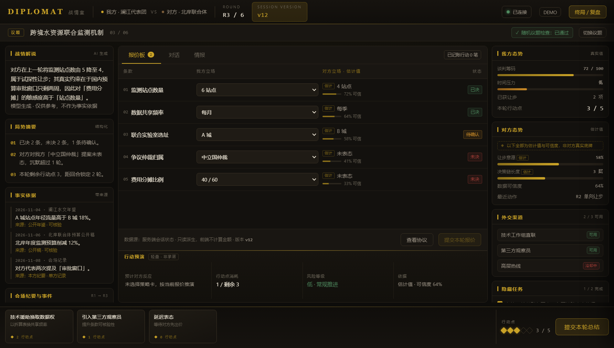
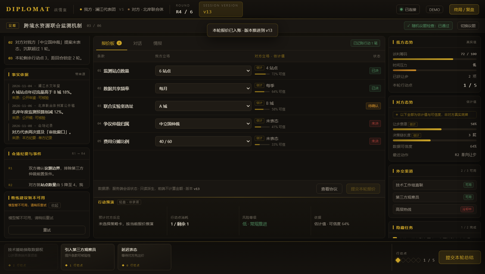
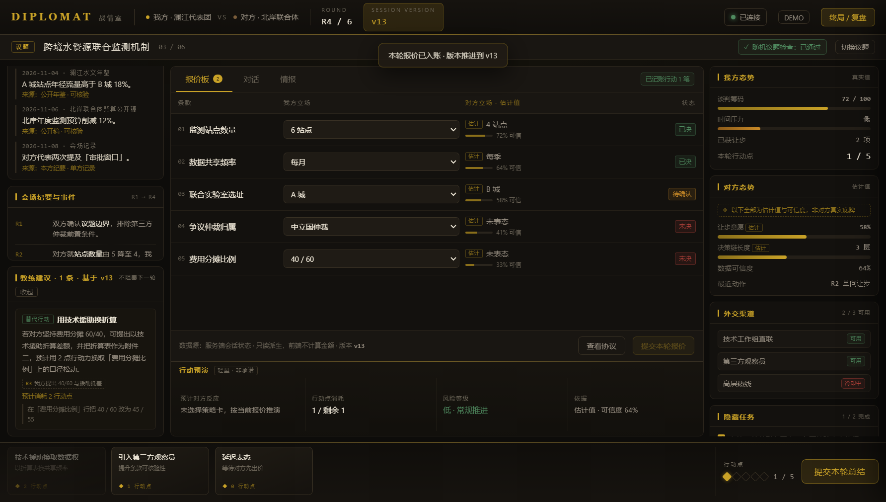
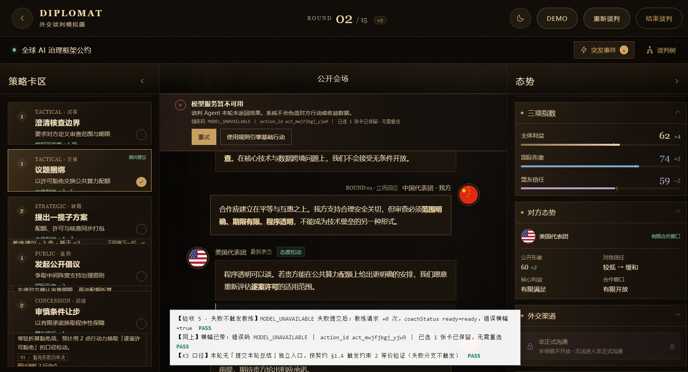
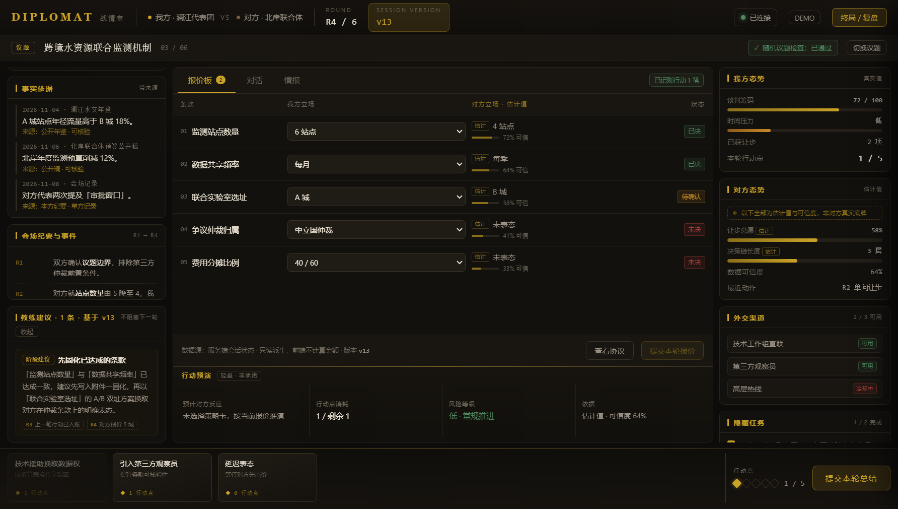
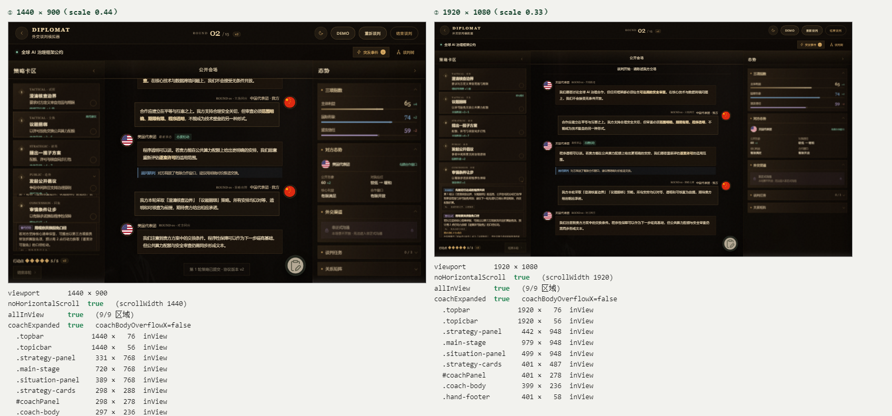
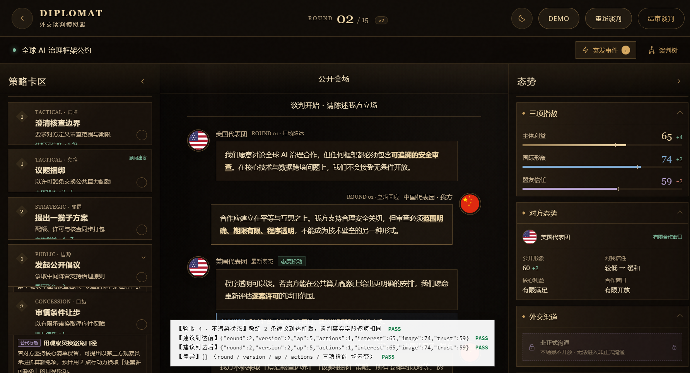
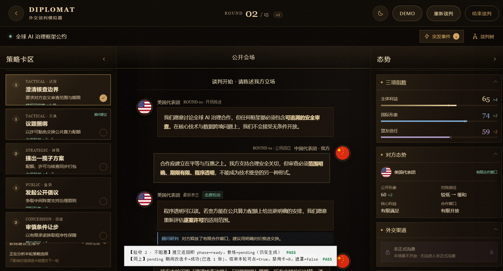
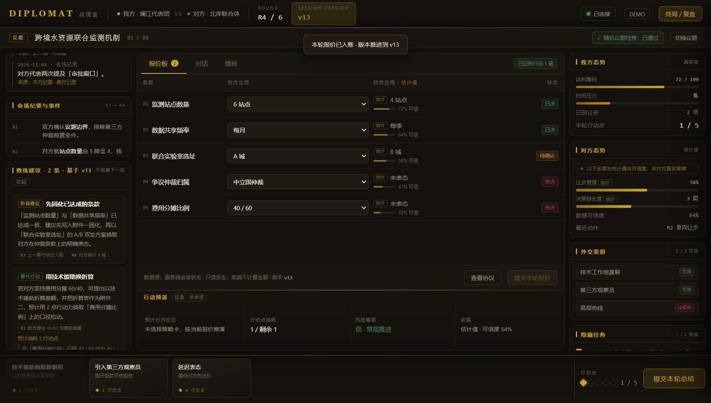
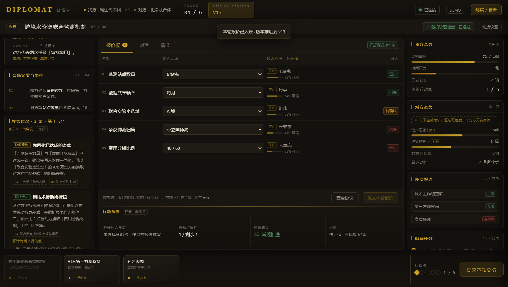

第 8 天素材索引
执行台账：docs/素材整理清单-day8.md · 母版：docs/recording-day7.md · 本页仅本机打开
视频 9 段 · 已录 9（同输入预录）
第 7/8 天截图 17 张 · 已归档 17
历史证据 10 张 · 已归档 10
已录 0 · 已验收 0
状态口径：待录灰 / 已录蓝 / 已验收金 / 已归档蓝。9 段视频已产出为同输入预录片段（无头 Edge 驱动真实页面逐帧截取 + ffmpeg 编码，无旁白音轨、非真人录屏），点击文件名可直接打开；预览版为 1440×900，1920 档见 viewport 截图与原始帧。版本探针截图 version-badges.png 已归档。
1. 视频段（9 段）
| 段号 | 文件名 | 覆盖镜头 | 时长 | 状态 | 验收截图 |
|---|---|---|---|---|---|
| 01 | 01_overview.mp4 | 01–02 | 30s | 已录 | |
| 02 | 02_board.mp4 | 03–04 | 55s | 已录 | |
| 03 | 03_protocol.mp4 | 05 | 15s | 已录 | |
| 04 | 04_busy_retry.mp4 | 06 | 25s | 已录 | |
| 05 | 05_conflict.mp4 | 07 | 25s | 已录 | |
| 06 | 06_degraded.mp4 | 08 | 18s | 已录 | |
| 07 | 07_viewport.mp4 | 09 | 14s | 已录 | |
| 08 | 08_finale.mp4 | 10 | 8s | 已录 | |
| 09 | 09_autoplay.mp4 | 05A | 20s | 已录 |


2. 第 7/8 天截图（17 张，已归档）
| # | 文件名 | 场景 | 对应段 | 状态 | 缩略图 |
|---|---|---|---|---|---|
| 1 | day8-overview-loaded.png | overview | 01 | 已归档 | 缺失 |
| 2 | day8-overview-versions.png | overview | 01 | 已归档 | 缺失 |
| 3 | day8-board-draft2.png | board | 02 | 已归档 | 缺失 |
| 4 | day8-board-preflight.png | board | 02 | 已归档 | 缺失 |
| 5 | day8-protocol-unresolved.png | protocol | 03 | 已归档 | 缺失 |
| 6 | day8-busy-banner.png | busy | 04 | 已归档 | 缺失 |
| 7 | day8-conflict-banner.png | conflict | 05 | 已归档 | 缺失 |
| 8 | day8-degraded-empty.png | degraded | 06 | 已归档 | 缺失 |
| 9 | day8-viewport-1440.png | viewport | 07 | 已归档 | 缺失 |
| 10 | day8-viewport-1920.png | viewport | 07 | 已归档 | 缺失 |
| 11 | day8-finale-five.png | finale | 08 | 已归档 | 缺失 |
| 12 | day8-finale-evaluation.png | finale | 08 | 已归档 | 缺失 |
| 13 | day8-finale-null.png | finale | 08 | 已归档 | 缺失 |
| 14 | day8-finale-evidence.png | finale | 08 | 已归档 | 缺失 |
| 15 | day8-finale-datasource.png | finale | 08 | 已归档 | 缺失 |
| 16 | day8-autoplay-running.png | autoplay | 09 | 已归档 | 缺失 |
| 17 | day8-autoplay-log3.png | autoplay | 09 | 已归档 | 缺失 |
3. 历史证据（10 张，已归档）
第 6 天教练 P1 证据，不是第 7/8 天录制截图，不冒充 day8-*。
| # | 文件 | 来源 | 状态 | 缩略图 |
|---|---|---|---|---|
| 1 | t6-collapsed.png | 第 6 天教练 P1 | 已归档 |  缺失 |
| 2 | t6-failed.png | 第 6 天教练 P1 | 已归档 |  缺失 |
| 3 | t6-filter.png | 第 6 天教练 P1 | 已归档 |  缺失 |
| 4 | t6-k3-notrigger.png | 第 6 天教练 P1 | 已归档 |  缺失 |
| 5 | t6-leakfilter.png | 第 6 天教练 P1 | 已归档 |  缺失 |
| 6 | t6-measure-both.png | 第 6 天教练 P1 | 已归档 |  缺失 |
| 7 | t6-no-pollution.png | 第 6 天教练 P1 | 已归档 |  缺失 |
| 8 | t6-nonblocking.png | 第 6 天教练 P1 | 已归档 |  缺失 |
| 9 | t6-ready.png | 第 6 天教练 P1 | 已归档 |  缺失 |
| 10 | t6-stale.png | 第 6 天教练 P1 | 已归档 |  缺失 |


4. 缺失项摘要（责任人与最晚时间）
已完成项保留在表内作为闭环记录；当前真正待办为第 1 / 3 / 7 / 8 行（视频、evidence 分目录、评分接入、导出检查）。
| # | 缺失项 | 阻塞原因 | 责任人 | 最晚补齐 |
|---|---|---|---|---|
| 1 | 9 段视频未录制 | 尚未执行录制；segments 目录未创建 | D | 2026-11-21 18:00 |
| 2 | 17 张 day8 截图已归档（2026-11-20 17:02） | 已完成；录制后复核 | D | 已完成 |
| 3 | evidence/t7–t11 未分目录 | 截图暂存 evidence 根目录，不阻塞 | D | 2026-11-21 18:00 |
| 4 | 错误注入预热脚本已确认 | 已完成：__diplomat.injectError(...) 实测 MODEL_UNAVAILABLE / SESSION_BUSY / ROUND_LOCKED / VERSION_CONFLICT 分流；BUSY/CONFLICT 横幅已截图 | A | 已完成 |
| 5 | 三处版本探针已实跑 | 已完成：无头 Edge 实测 #mVer/#bdVer/#drVer v1 三处一致，推进后 v3/v3/v3 同源 | D | 已完成 |
| 6 | 构建机 dist 与单文件版已重生成 | 已完成：npm run build 与 node build-single.mjs 均 exit 0 | D | 已完成 |
| 7 | speaker_score 评分未接入 | state 无该字段 | A / C | 2026-11-22 18:00 |
| 8 | 导出检查未执行 | 素材尚未生成 | D | 2026-11-21 22:00 |
5. 导出检查
| # | 检查项 | 标准 | 状态 |
|---|---|---|---|
| 1 | 分辨率 | 1920×1080 | [ ] 未完成 |
| 2 | 帧率 | 30fps | [ ] 未完成 |
| 3 | 容器/编码 | MP4 / H.264 / yuv420p | [ ] 未完成 |
| 4 | 完整原片 | raw/full_*.mp4 | [ ] 未完成 |
| 5 | 分段原片 | segments/01–09 | [ ] 未完成 |
| 6 | 无字幕原片 | segments/*_nosub.mp4 | [ ] 未完成 |
| 7 | 字幕 SRT | srt/ 9 份 | [ ] 未完成 |
| 8 | 封面 | cover/cover_1920x1080.png | [ ] 未完成 |
| 9 | 讲解词 | 与逐镜旁白稿一致 | [ ] 未完成 |
| 10 | 最终导出 | final/day7_full_subtitled.mp4 | [ ] 未完成 |
| 11 | 密钥/私有配置（代码） | httpBase 空、无 Token、无真实域名 | [x] 已检查（2026-11-20） |
| 12 | 密钥/私有配置（素材） | 画面不含 .env、Token、内网地址 | [ ] 未完成 |